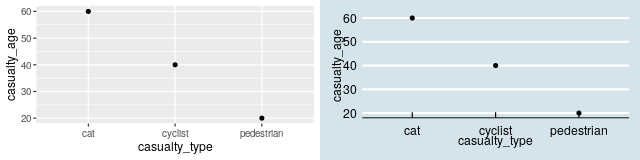

4 R packages
4.1 What are packages?
R has over 15,000 packages published on the official ‘CRAN’ site and many more published on code sharing sites such as GitHub.
Packages are effectively plugins for R that extend it in many ways.
Packages are useful because they enhance the range of things you can do with R, providing additional functions, data and documentation that build on the core (known as ‘base’) R packages.
They range from general-purpose packages such as tidyverse and sf to domain-specific packages such as stats19.
This chapter demonstrates the package lifecycle with reference stats19 and provides a taster of R’s visualisation capabilities with reference to the general purpose packages ggplot2 and dplyr.
The stats19 package is particularly relevant for reproducible road safety research: its purpose is to download and clean road traffic collision data from the UK’s Department for Transport.
Domain-specific packages such as stats19 are often written by subject-matter experts, providing tried and tested solutions in a particular specialism. Packages available via CRAN are reviewed by code experts ? prior to being made available via CRAN (OR SIMILAR WORDING _ IE SOME SORT OF ASSURANCE PROCESS HAS HAPPENED..?)
Regardless of which packages you install and use, there are a number of steps you will take:11
- installing the package
- loading the package
- using the package
- updating the package
Of these, the third stage takes by far the most amount of time.
Stages 1, 2 and 4 are equally important, however: you cannot use a package unless it has been properly installed, loaded and, to get the best performance out of the latest version, updated when new versions are released.
We will learn each of these stages of the package lifecycle with the stats19 package.
4.2 The stats19 R package
Like many packages, stats19 was developed to meet a real world need.
STATS19 data is provided as a free and open resource by the Department for Transport, encouraging evidence-based and accountable road safety research and policy interventions.
However, researchers at the University of Leeds found that repeatedly downloading and formatting open STATS19 data was time-consuming, taking valuable resources away from more valuable (and fun) aspects of the research process.
Importantly, manually recoding the data,for example from 1 to Fatal, was error-prone.
By packaging-up code to reliably solve the problem for ourselves, we found that we could solve the problem in a free, open and reproducible way for everyone (Lovelace et al. 2019).
By abstracting the process to its fundamental steps (download, read, format), the stats19 package makes it easy to get the data into appropriate formats (of classes tbl, data.frame and sf), ready for further processing and analysis steps.
The package built on previous work (Lovelace, Roberts, and Kellar 2016) with several important improvements, including the conversion of crash data into geographic data in a sf data frame for geographic research (e.g. Austin, Tight, and Kirby 1997).
It enables creation of geographic representations of the crash data, geo-referenced to the correct coordinate reference system, in a single function, called format_sf().
Part funded by the RAC Foundation, the package should be of use to academic researchers and professional road safety data analysts working at local authority and national levels in the UK.
The following sections demonstrate how to install, load and use packages with reference to stats19. This knowledge can be used to install, load and use any package.
4.3 Installing packages
The stats19 package is available on CRAN.
This means that it has a web page on the CRAN website at cran.r-project.org — see cran.r-project.org/package=stats19 — with useful information including who developed the package, what the latest version is and when it was last updated.
More importantly, being ‘on CRAN’ (which technically means ‘available on the Comprehensive R Archive Network’) means that that it can be installed with the command install.packages() as follows:12
You might think that now that the package has been installed we can start using it, but that is not true. This is illustrated in the below code which tries and fails to run the find_file_name() function from the stats19 package to find the file containing STATS19 casualties data for the year 2019. (check that this function exists by running the following command ?find_file_name):
## Error in find_file_name(years = 2019, type = "casualties"): could not find function "find_file_name"4.4 Loading packages
After you have installed a package the next step is to ‘load’ it.13
Load the stats19 package, that was installed in the previous section, using the following code:
## Data provided under OGL v3.0. Cite the source and link to:
## www.nationalarchives.gov.uk/doc/open-government-licence/version/3/What happened? Other than the message telling us about the package’s datasets (most packages load silently so do not worry if nothing happens when you load a package), the command above made the functions and datasets in the package available to us. Now we can use functions from the package without an error message, as follows:
## [1] "DfTRoadSafety_Casualties_2019.zip"This raises the question: how do you know which functions are available in a particular package?
You can find out using autocompletion, by pressing Tab after typing the package’s name followed by two colons.
Try typing stats19:: and then hitting Tab, for example.
You should see a load of function names appearing which you view by pressing Up and Down on your keyboard.
The final thing to say about packages is that you can use them without loading them by typing package::function(). We used this before in CHAPTER 2.8 where we imported csv data using the readr package via readr::read_csv().
So stats19::find_file_name(years = 2019, type = "casualties") works even if the package isn’t loaded.
You can test this by running the sf_extSoftVersion() command from the sf package. This command reports the versions of key geographic libraries installed on your system. In the first attempt below, the command fails and reports an error. In the second and third attempts, utilising :: and library, you can see that the command succeeds:
## Error in sf_extSoftVersion(): could not find function "sf_extSoftVersion"## GEOS GDAL proj.4 GDAL_with_GEOS USE_PROJ_H
## "3.8.0" "3.0.4" "6.3.1" "true" "true"## Linking to GEOS 3.8.0, GDAL 3.0.4, PROJ 6.3.1## GEOS GDAL proj.4 GDAL_with_GEOS USE_PROJ_H
## "3.8.0" "3.0.4" "6.3.1" "true" "true"As a bonus, try running the command sf::sf_extSoftVersion without the brackets ().
What does that tell you about the package?
4.5 Using packages
After loading a package, as described in the previous section, you can start using its functions.
In the stats19 package that means the following commandget_stats19() will now work:
## [1] 117536This command demonstrates the value of packages.
It would have been possible to get the same dataset by manually downloading and cleaning the file from the STATS19 website on data.gov.uk.
However, by using the package the process has happened much faster and with fewer lines of code than would have been possible using general-purpose base R functions.
The result of the nrow() function call shows that we have downloaded a decent amount of data representing over 100k road traffic casualty incidents across Great Britain in 2019.
We will use other functions from the package in subsequent chapters.
If you would like to learn more about stats19 and how it can be used for road safety research check out its vignettes.
The stats19 vignette, for example, should appear in the Help panel in the bottom right panel in RStudio after running the following command:
4.6 Updating packages
Packages can be updated with the command update.package() or in Tools > Check for Package Updates in RStudio.
You only need to install a package once but packages can be updated many times. It is important to update packages regularly because ?????.
To update just one package, you can give the function a package name, e.g.:
Completing the following short exercises will ensure you’ve got a good understanding of packages and package versions.
- Take a look in the Packages tab in the Files pane in RStudio (bottom right by default).
- What version of the
stats19package is installed on your computer? - What happens the second time you run
update.packages(). Why?
4.7 ggplot2
ggplot2 is a generic plotting package that is part of the ‘tidyverse’ meta-package. The tidyverse is an “opinionated collection of R packages designed for data science”.
ggplot2 is flexible, popular and has dozens of add-on packages which build on it, such as gganimate.
To plot non-spatial data, it works as follows (the command should generate the image shown in Figure 4.1 and show a bar chart of the number of crashes by over time):

Figure 4.1: A simple ggplot2 graph.
A key feature of the ggplot2 package is the function ggplot2(). This function initiates the creation of a plot by taking a data object as its main argument followed by one or more ‘geoms’ that represent layers (in this case a bar chart represented by the function geom_bar()).
Another distinctive feature of ggplot2() is the use of + operator to add layers.
The package is excellent for generating publication quality figures. Starting from a basic idea, you can make incremental tweaks to a plot to get the output you want. Building on the figure above, we could make the bin width (width of the bars) wider, add colour depending on the crash severity and use count or proportion as our y axis, for example, as follows:
ggplot(crashes_2019) + geom_bar(aes(date, fill = accident_severity), width = 1)
ggplot(crashes_2019) +
geom_bar(aes(date, fill = accident_severity), width = 1, position = "fill") +
ylab("Proportion of crashes")Figure 4.2: Demonstration of fill and position arguments in ggplot2.
The package is huge and powerful, with support for a very wide range of plot types and themes, so it is worth taking time to read the documentation associated with the package, starting with the online reference manual and heading towards the online version of the package’s official book (Wickham 2016).
As a final taught bit of ggplot2 code in this chapter, create a facetted plot showing how the number of crashes per hour varies across the days of the week by typing the following into the Source Editor and running the chunk line-by-line (the meaning of the commands should become clear by the end of the next Chapter):
library(tidyverse)
crashes_2019 %>%
mutate(hour = lubridate::hour(datetime)) %>%
mutate(day = lubridate::wday(date)) %>%
filter(!is.na(hour)) %>%
ggplot(aes(hour, fill = accident_severity)) +
geom_bar(width = 1.01) +
facet_wrap(~day)Figure 4.3: A plot showing a facetted time series plot made with ggplot2.
Exercises:
1. Install a package that build on ggplot2 that begins with with gg. Hint: enter install.packages(gg) and hit Tab when your cursor is between the g and the ).
1. Open a help page in the newly installed package with the ?package_name::function() syntax.
1. Load the package.
1. Bonus: try using functionality from the new ‘gg’ package building on the example above to create plots like those shown below (hint: the right plot below uses the economist theme from the ggthemes package, try other themes).

4.8 dplyr
Another useful package in the tidyverse is dplyr, which stands for ‘data pliers’ and provides a handy syntax for data manipulation.
dplyr has many functions for manipulating data frames and using the pipe operator %>%.
The pipe operator puts the output of one command into the first argument of the next, as shown below (note the results are the same):
## [1] "data.frame"## [1] "data.frame"We will learn more about this package and its other functions in Chapter 5.
If for whatever reason you want to uninstall a package you can uninstall it in a fifth stage with commands such as
remove.packages("stats19").↩︎To install the development version, which may have new features or but fixes that are not yet on CRAN, you can use the function
remotes::install_github("org/pkg"). Thestats19package is hosted on the rOpenSci organisation at github.com/ropensci/stats19, so you can install the development version withremotes::install_github("ropensci/stats19")(you must have theremotespackage installed before that will work). Note: it’s usually safest to stick with the latest version on CRAN unless you know what you’re doing.↩︎Technically, this means that the package namespace has been attached to the search path, making their functions available from the global environment (Wickham 2014).↩︎